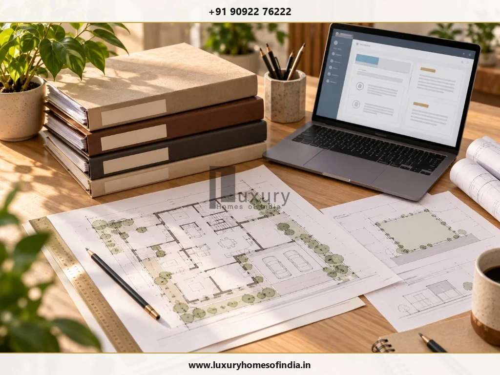
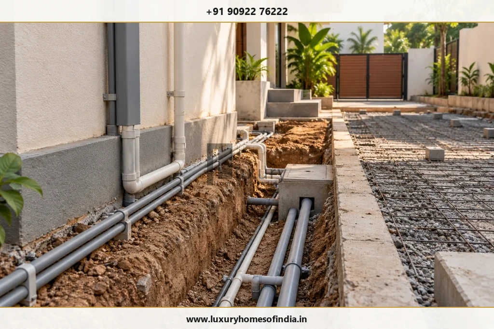
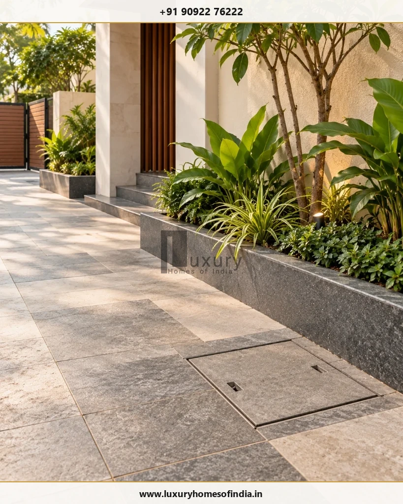

Getting a Metro Water connection for a new house in Chennai involves more than completing the internal plumbing. Homeowners need to check the applicable Chennai Metropolitan Water Supply and Sewerage Board (CMWSSB) procedure, confirm whether the property can receive the required services, prepare the relevant property and planning records, and follow the prescribed inspection and payment process. Requirements can vary by building category, property assessment status and available public infrastructure. Water supply and sewerage should also be coordinated with the home's drainage design, rainwater harvesting, sump, overhead tank and external service routes. Before budgeting or submitting an application, verify the current documents, applicable charges and processing requirements directly with CMWSSB. Planning the connection before external paving and landscaping are finished can also help reduce avoidable disruption during the final stages of construction.
1. Who provides Metro Water connections in Chennai?
The Chennai Metropolitan Water Supply and Sewerage Board (CMWSSB), commonly known as Chennai Metro Water, is the public utility responsible for water supply and sewerage services within its service area.
Official CMWSSB Portals
Official Website: Chennai Metropolitan Water Supply and Sewerage Board
New Connection Portal: Official CMWSSB Water & Sewer Connection Portal
Before applying, confirm that the property falls within the relevant service area and establish whether the required water and sewer services are available at the premises. A connection at a neighbouring property does not, by itself, establish eligibility or immediate availability for a different house.
2. Can you apply for a Metro Water connection to a newly built house?
A newly built house may qualify for a connection subject to the applicable rules, property details, infrastructure availability and approval process. The correct application category should be confirmed with CMWSSB rather than inferred from the building's floor count alone.
Before submitting the application, check:
- The property's address and applicable CMWSSB service area or depot.
- The sanctioned building plan and relevant planning permission.
- Whether a completion certificate is required for the particular building category.
- Whether the property has the relevant assessment or whether an assessment application is pending.
- Whether the required rainwater-harvesting provision and internal plumbing are complete.
- Whether the property requires a water connection, a sewer connection or both.
Important: Do not rely on a general statement about eligibility or a completion-certificate exemption without checking the current rule that applies to your property. Ask CMWSSB to confirm any category-specific condition before arranging documents or making payments.
3. Documents to prepare before applying
Prepare digital and physical copies of the records relevant to your property. The final checklist must come from the current application instructions and the requirements for the applicable building category.

| Document or Record | What to Verify |
|---|---|
| Applicant and property details | Correct applicant information and property identification |
| Sanctioned building plan | Whether the approved plan is required for application and site inspection |
| Planning permission | The applicable planning approval (CMDA/GCC) and supporting records |
| Completion certificate (CC) | Whether the certificate is mandatory for your building category |
| Property-assessment acknowledgement | Whether an acknowledgement is acceptable when assessment is pending |
| Water / Sewerage tax receipts | Whether existing dues or previous assessment records must be demonstrated |
| Rainwater-harvesting details | The required RWH pit provision and readiness for utility inspection |
| Prescribed indemnity bond / declaration | Whether the current procedure requires a notarized declaration |
| Infrastructure Development Charge records | Whether an earlier payment is relevant to the present application |
Keep payment receipts and application acknowledgements in one folder. If a document is not applicable to your property, do not assume that a substitute is acceptable—confirm the requirement with CMWSSB.
4. How to apply for a new Metro Water connection
Step 1: Identify the correct application category
Open the official CMWSSB new connection portal through the Board's website. Check the current application options and determine which category applies to the house.
Step 2: Confirm water and sewer availability
Check whether the required public water supply and sewerage infrastructure serves the property. Clarify whether the services use a combined or separate application route under the current procedure.
Step 3: Complete the required private-side works
Coordinate internal plumbing and rainwater harvesting with the architect and plumbing contractor. Confirm the intended service entry, underground pipe routes, sump, overhead tank, pump arrangement and internal distribution before final external finishes are completed.

Step 4: Submit the application and supporting records
Enter accurate applicant and property details. Upload or submit the documents requested by the current application process. Retain the application reference number.
Step 5: Prepare for inspection and verification
CMWSSB officers may inspect the property to verify building records, RWH pit installation, and internal plumbing readiness before approving supply.
Step 6: Verify the official demand and pay
Review the official fee demand before payment. Demands can include connection charges, meter charges, Infrastructure Development Charges (IDC), deposits, and road restoration fees.
Step 7: Coordinate the authorised connection work
After formal approval, coordinate the road-cutting and main-line connection work with CMWSSB's authorized contractors. Do not attempt unauthorized main-line connections.
5. How much does a Metro Water connection cost in Chennai?
There is no single reliable amount to quote for every new house without establishing the property category, services requested and current official fee calculation.
The amount payable may depend on:
- The building category and applicable connection scheme.
- The prescribed calculation for the property, including dwelling-unit criteria where applicable.
- Whether water supply, sewerage or both services are requested.
- Applicable meter-testing or other connection-related charges.
- Infrastructure Development Charges (IDC) and treatment of previous payments.
- Deposits, advance tax and outstanding dues where applicable.
- Road-cutting and restoration charges paid to GCC / Highways.
6. Does the property need a sewer connection as well?
Water supply and sewerage should be considered together during home planning, but the requirements and availability of each service must be confirmed separately.
Before finalising the plumbing design, clarify:
- Whether a public sewer network serves the property.
- Whether water and sewer connections require a combined or separate application.
- Which internal sanitary works must be ready for inspection.
- How rainwater drainage will remain strictly separate from sanitary drainage (connecting stormwater to sewers is prohibited).
7. How to avoid delays when applying
- Check approved plan against completed house: Ensure room dimensions, built-up area, and floor counts match approved drawings.
- Keep assessment records ready: Ensure property tax / assessment application acknowledgements are on file.
- Complete RWH pit before inspection: Rainwater harvesting verification is mandatory for CMWSSB approval.
- Verify previous payments: Produce receipts for any prior Infrastructure Development Charges paid during building plan approval.
8. What should homeowners coordinate with their construction team?
For a new house, utility planning should form part of the construction programme rather than being left until final handover.

The homeowner, architect, plumbing contractor and construction team should coordinate:
- The intended water-entry point and private-side service route.
- Sump capacity and location, overhead tank, pump arrangement and internal distribution.
- Required rainwater-harvesting provisions.
- Sanitary plumbing and the approved sewerage arrangement.
- Access for inspection and connection work without damaging finished paving or landscaping.
Building a Custom Luxury Home in Chennai?
Ensure complete utility coordination—Metro Water, EB connection, rainwater harvesting, and drainage—integrated into your architectural and construction roadmap.
Schedule a Utility Planning Consultation9. Common mistakes to avoid
- Assuming completed internal plumbing equals utility approval: Public connection requires formal CMWSSB sanction.
- Using outdated application routes: Always apply through the official CMWSSB portal.
- Budgeting from another property's receipt: Charges vary by dwelling unit and road restoration requirements.
- Ignoring rainwater harvesting: RWH compliance is strictly inspected before service release.
- Waiting until external paving is complete: Lay underground service conduits before paving driveways and planter beds.
10. Frequently asked questions
Plan the utility connection before final handover
A Metro Water connection belongs in the new-house completion plan alongside internal plumbing, rainwater harvesting, drainage, property assessment and other applicable approvals.
Confirming the current CMWSSB procedure early helps homeowners prepare the right records, understand the applicable cost components and coordinate connection work before external finishes are completed.
Disclaimer: This guide provides general homeowner information. Application categories, fees, documents, exemptions and service timelines should be verified with CMWSSB before application.